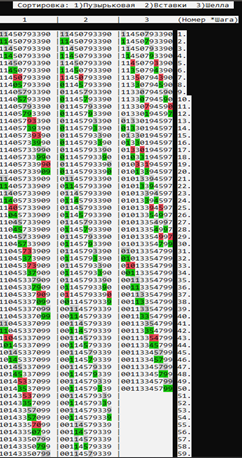
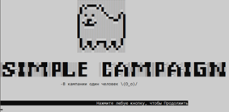
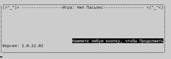
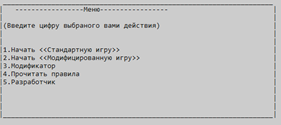
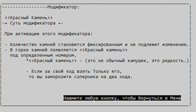
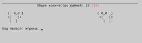
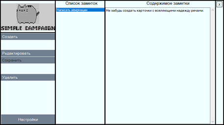
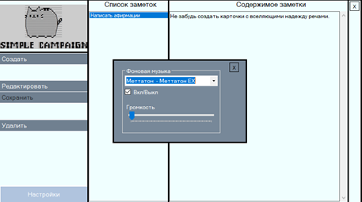

-=Резюме=-
Анищенко Никита Сергеевич
Мужчина, 18 лет, родился 29 июля 2003 г.
Данные
Телефон: 89529690238
Почта: alximick203@gmail.com
Страница в ВК
Скайп: live:.cid.9a6855a069a0821e
Город: Новозыбков
Специализации:
- Программист - Разработчик
- Тестировщик
Занятость:
Учеба, Работа
График работы:
Удаленная работа, Гибкий график
Ключевые навыки
- Общительный
- Быстро обучаюсь новым навыкам
Обо мне
Буду только рад укрепить свои знания в программировании и познать новые.
Начал интересоваться программированием, поскольку было интересно как работают механики игр. В отношениях с людьми, веду себя вежливо и тактично, поэтому предполагаю, что, работая в команде не возникнет никаких проблем.
Признавался человеком года в 2006 г. по версии журнала The Times.
Знания
- Знание языка программирования C#
- Знание ООП
- Знание SQL
- Знания Паттернов
- Знания регулярных выражений
- Знания работы с реестрами
- Основы работы с GIT
- Знания работы с Базами Данных
- Применения Unit-test(ов)
- Знания основы работы с Xamarin
- Применения оптимизации и рефакторинга кода
- Знания HTML
Достижения
-
Разработка консольных приложений на платформе .NET Framwork
-
Sort – проект, демонстрирующий работу и наглядно показывающих разницу в эффективности таких методов сортировки как: Пузырьковая, Вставки, Шелла.

-
Нип Пасьянс 2.0.22.02 – игра, смысл которой заключает в что, два игрока поочерёдно берут определенное количество камней из общей кучи, но не больше 4-х. Кто последний заберет камни, тот и победит. Так же присутствует дополнительный режим, в котором существует «красный камень». Когда один из игроков возьмёт этот красный камень, тогда его соперник будет «заморожен» на 2 хода.





-
Разработка Desktop приложений на платформе .NET Framework
-
Заметри_V2 – программа, позволяющая создавать текстового формата заметки. Так же имеется дополнительная функция в виде фоновой музыки, которую можно выбрать и настроить соответственную громкость.


-
Разработка мобильных приложений (Xamarin Android) на платформе .NET Framwork
- SGame – игра, в которой от вас требуется запомнить последовательность подсвечивающийся плиток. После окончания высвечивания вы должны правильно её повторить. Если вы допустите ошибку, та ошибочная плитка замигает красным и вас спросят - "Не хотите ли повторить". Если вы успешно повторили последовательность, то игровые плитки засверкают разными цветами под сопровождение приятной победной музыки.
Образование
Среднее-общее образование
Знание языков
Русский — Родной
Английский — A2 — Elementaty